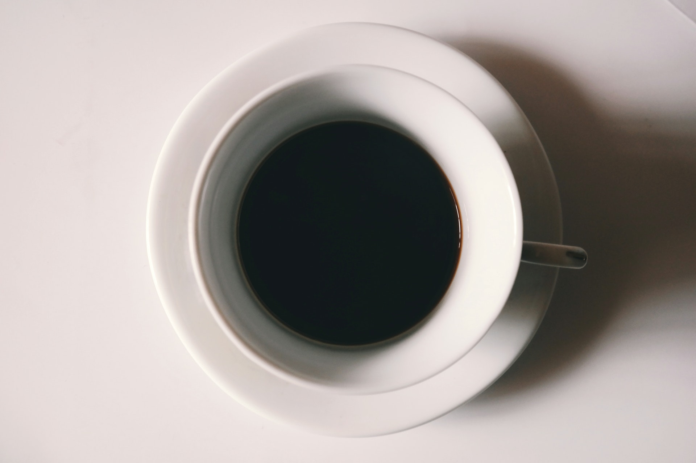
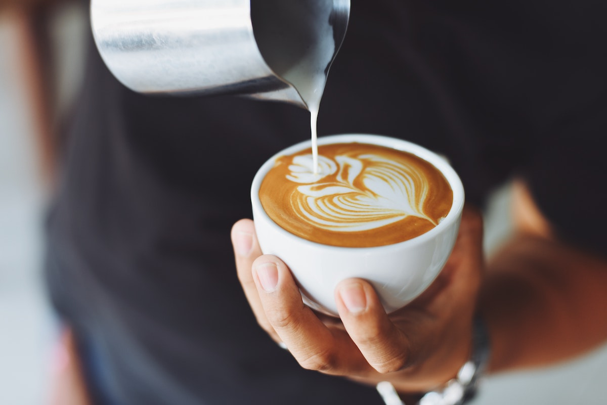

Flavors
Coffee comes in a lot of different types and flavors.
Click the coffee of your choosing for more information.




Coffee comes in a lot of different types and flavors.
Click the coffee of your choosing for more information.